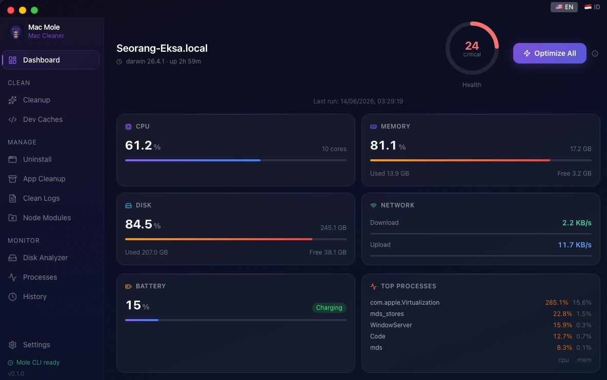
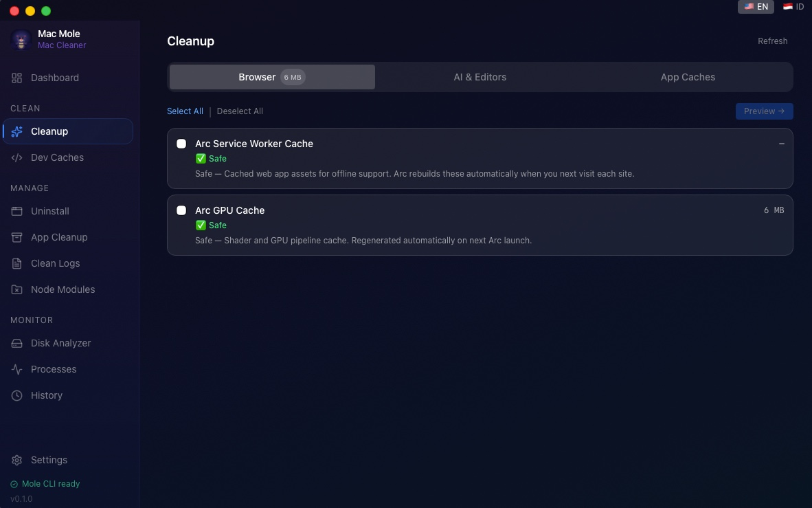
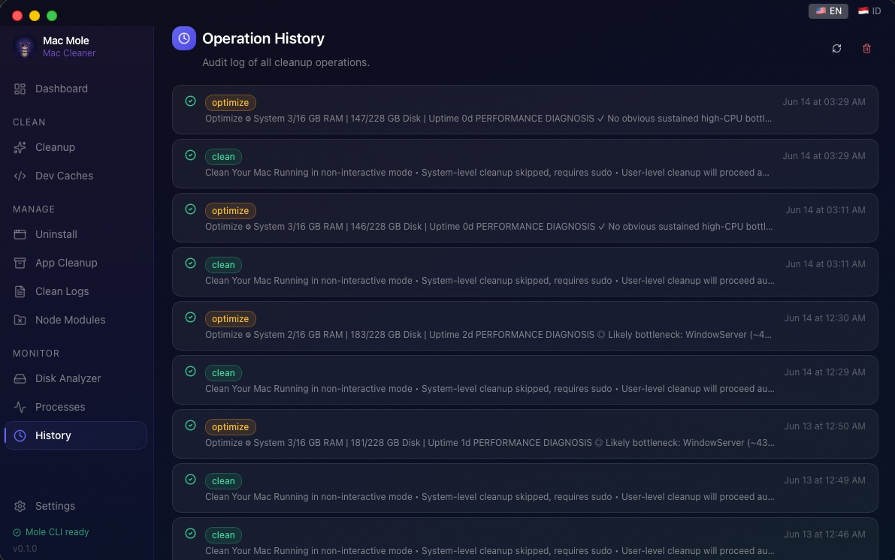
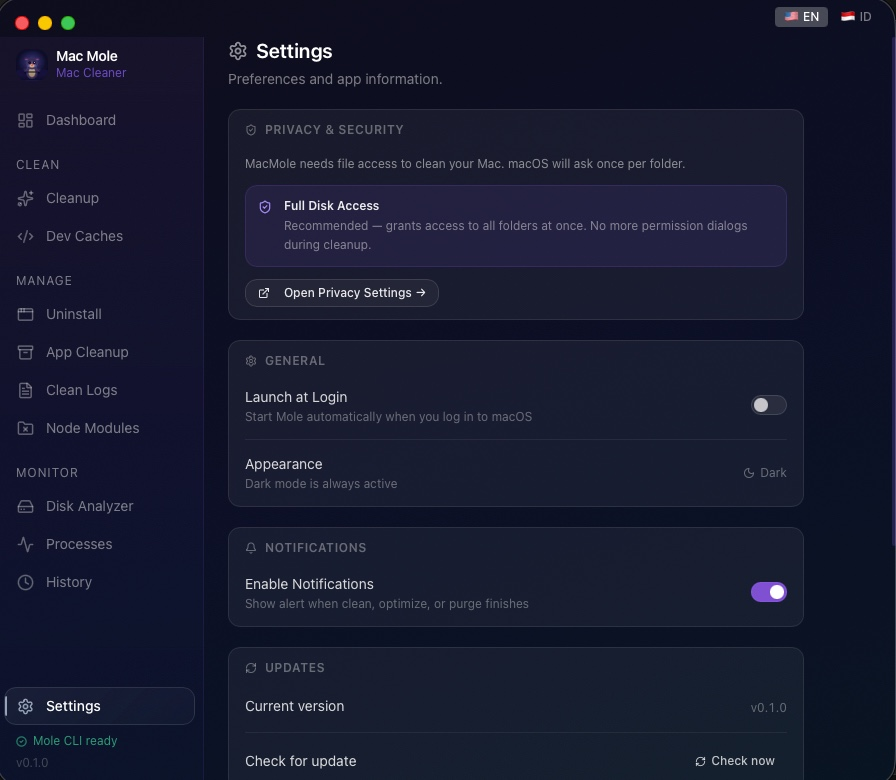

MacMole is a native macOS desktop app that wraps the powerful Mole CLI — real-time metrics, browser & AI cache cleanup, and one-click optimization.
v0.2.0 · macOS 12+ · Apple Silicon & Intel · Free for personal use
All-in-one toolkit replacing CleanMyMac, AppCleaner, DaisyDisk, and iStat Menus.
CPU, RAM, Disk, Network, and Battery with a live health score and per-process breakdown.
Browser caches (Chrome, Brave, Arc), AI tool caches (Claude, Copilot, Cursor), and app caches — all with safety badges.
Rebuild launch services, flush DNS, refresh Finder and Dock, clear logs, and reset network services.
Visual breakdown of disk usage by directory — navigate, inspect, and move large files to Trash.
Remove apps with all hidden remnants — preferences, launch agents, caches, and extensions.
Scan your projects and purge unused node_modules directories to reclaim gigabytes.
Built-in Full Disk Access guidance — auto-detects when permission is granted and stops asking.
Full English and Bahasa Indonesia support — switch instantly from the top-right language toggle.




Download the latest release, open the .app, and drag it to your Applications folder.
↓ Download MacMole v0.2.0Or build from source:
Also install the Mole CLI for terminal use: